返回商城照片与开放数据来源
虚构门店、原创演示套餐与演示分享不代表真实经营或消费。照片仅为题材配图，非虚构门店实景，不构成人物、品牌或场地背书。照片及其WebP/缩略图保留各自许可，与代码Apache许可分开。
开放场所数据：© OpenStreetMap contributors，ODbL 1.0；原始小样本与衍生场所表按ODbL提供，见仓库content/poi。开放场所未入驻本平台，不提供在售套餐或虚构评价。
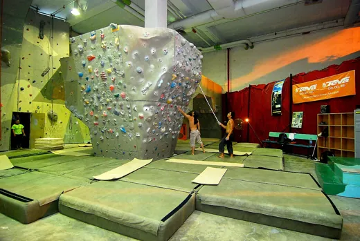
室内攀岩
File:Indoor Climbing Wall Bouldering Mats.jpg — amrufm
原始文件说明页 · CC BY 2.0Converted the Commons source rendition to WebP, downscaled without cropping; thumbnail downscaled separately. Derivatives retain source license.
本地文件：/imgs/content/climb.webp
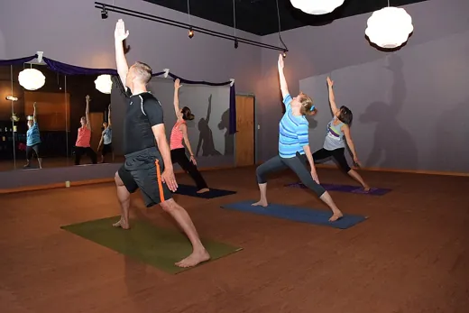
瑜伽练习
File:Platinum Yoga.jpg — Greatmats
原始文件说明页 · CC BY-SA 4.0Converted the Commons source rendition to WebP, downscaled without cropping; thumbnail downscaled separately. Derivatives retain source license.
本地文件：/imgs/content/yoga.webp
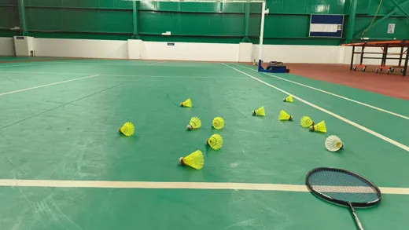
羽毛球场
File:Badminton court view.jpg — Darakshanehaluddin
原始文件说明页 · CC0Converted the Commons source rendition to WebP, downscaled without cropping; thumbnail downscaled separately. Derivatives retain source license.
本地文件：/imgs/content/badminton.webp
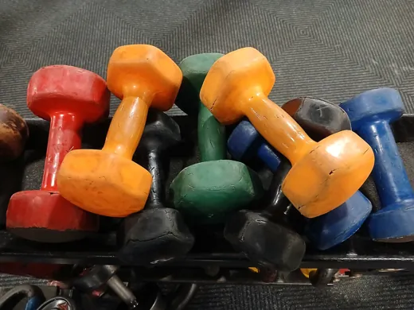
力量训练
File:Colorful pile of dumbbells at the gym 2.jpg — Ser Amantio di Nicolao
原始文件说明页 · CC BY-SA 4.0Converted the Commons source rendition to WebP, downscaled without cropping; thumbnail downscaled separately. Derivatives retain source license.
本地文件：/imgs/content/fitness.webp
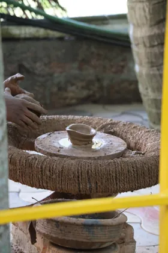
陶艺拉坯
File:Potter shaping clay on a traditional manual potter’s wheel in India 02.jpg — Gannu03
原始文件说明页 · CC BY-SA 4.0Converted the Commons source rendition to WebP, downscaled without cropping; thumbnail downscaled separately. Derivatives retain source license.
本地文件：/imgs/content/pottery.webp
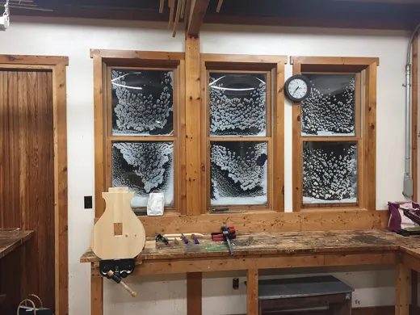
木作工具
File:Woodworking with Hand Tools at the North House Folk School in Grand Marais, MN.jpg — Terasaface
原始文件说明页 · CC BY-SA 4.0Converted the Commons source rendition to WebP, downscaled without cropping; thumbnail downscaled separately. Derivatives retain source license.
本地文件：/imgs/content/wood.webp
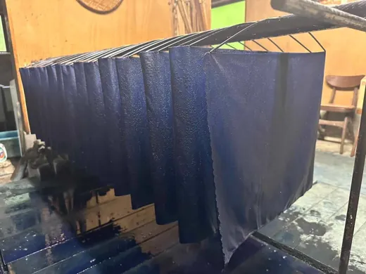
靛蓝染织
File:Indigo dyed fabric is raised from the dye vat.jpg — Markmcnbowe97
原始文件说明页 · CC BY-SA 4.0Converted the Commons source rendition to WebP, downscaled without cropping; thumbnail downscaled separately. Derivatives retain source license.
本地文件：/imgs/content/dye.webp
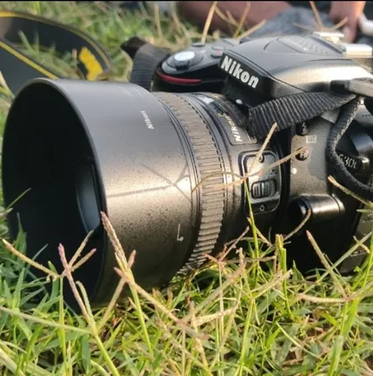
摄影器材
File:Camera photography.jpg — Shalini krishnan
原始文件说明页 · CC0Converted the Commons source rendition to WebP, downscaled without cropping; thumbnail downscaled separately. Derivatives retain source license.
本地文件：/imgs/content/photo.webp
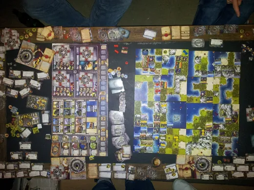
桌游场景
File:Civilization Board Game Table.jpg — Ervaude
原始文件说明页 · CC BY-SA 3.0Converted the Commons source rendition to WebP, downscaled without cropping; thumbnail downscaled separately. Derivatives retain source license.
本地文件：/imgs/content/board.webp
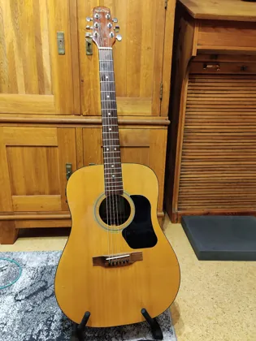
原声吉他
File:00 Walden Acoustic Guitar D310e 01.jpg — Elmschrat
原始文件说明页 · CC BY-SA 4.0Converted the Commons source rendition to WebP, downscaled without cropping; thumbnail downscaled separately. Derivatives retain source license.
本地文件：/imgs/content/guitar.webp
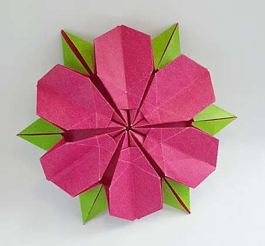
折纸作品
File:Flower origami model by Ligia Montoya.jpg — Kerstin
原始文件说明页 · CC BY-SA 2.0Converted the Commons source rendition to WebP, downscaled without cropping; thumbnail downscaled separately. Derivatives retain source license.
本地文件：/imgs/content/paper.webp
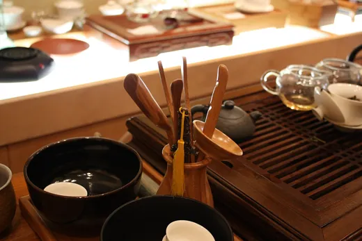
茶席器具
File:Chinese tea utensils.jpg — Gary Stevens
原始文件说明页 · CC BY 2.0Converted the Commons source rendition to WebP, downscaled without cropping; thumbnail downscaled separately. Derivatives retain source license.
本地文件：/imgs/content/tea.webp
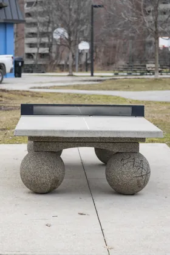
乒乓球台
File:Table tennis table in Dentonia Park 55.jpg — Fabian Roudra Baroi
原始文件说明页 · CC BY-SA 4.0Converted the Commons source rendition to WebP, downscaled without cropping; thumbnail downscaled separately. Derivatives retain source license.
本地文件：/imgs/content/pingpong.webp
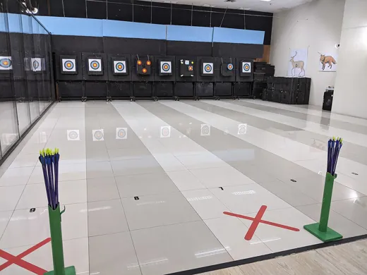
射箭练习
File:Wild Bow Archery April 2021 01.jpg — Martin Michlmayr
原始文件说明页 · CC BY-SA 4.0Converted the Commons source rendition to WebP, downscaled without cropping; thumbnail downscaled separately. Derivatives retain source license.
本地文件：/imgs/content/archery.webp
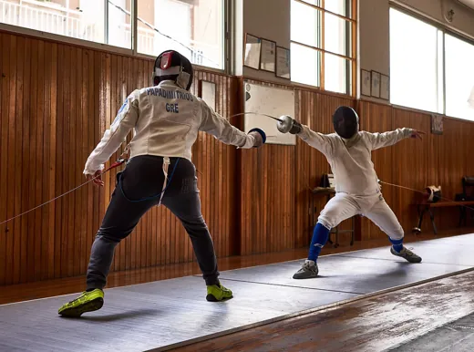
击剑练习
File:Fencing in Greece. Greek Epee Fencers. Fencing training at Athenaikos Fencing Club.jpg — George E. Koronaios
原始文件说明页 · CC BY-SA 4.0Converted the Commons source rendition to WebP, downscaled without cropping; thumbnail downscaled separately. Derivatives retain source license.
本地文件：/imgs/content/fencing.webp
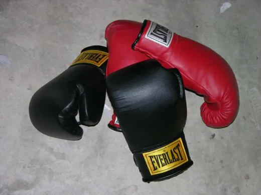
拳击器材
File:Boxing gloves.jpg — en:User:Andman8
原始文件说明页 · CC BY 2.5Converted the Commons source rendition to WebP, downscaled without cropping; thumbnail downscaled separately. Derivatives retain source license.
本地文件：/imgs/content/boxing.webp
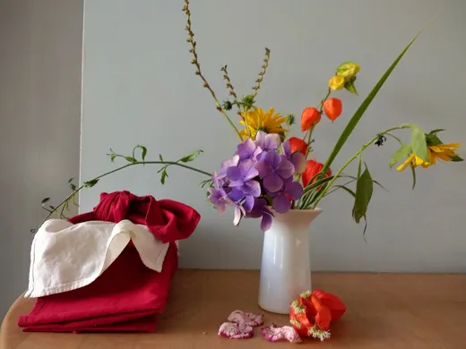
花艺作品
File:Ikebana-Dojo-Bonn-2019.jpg — Marko Kafé
原始文件说明页 · CC BY-SA 4.0Converted the Commons source rendition to WebP, downscaled without cropping; thumbnail downscaled separately. Derivatives retain source license.
本地文件：/imgs/content/flower.webp
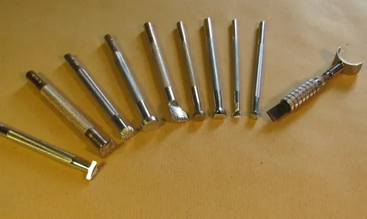
皮具手作
File:Drehmesser und Punziereisen.jpg — Lederartisan
原始文件说明页 · CC BY-SA 3.0Converted the Commons source rendition to WebP, downscaled without cropping; thumbnail downscaled separately. Derivatives retain source license.
本地文件：/imgs/content/leather.webp
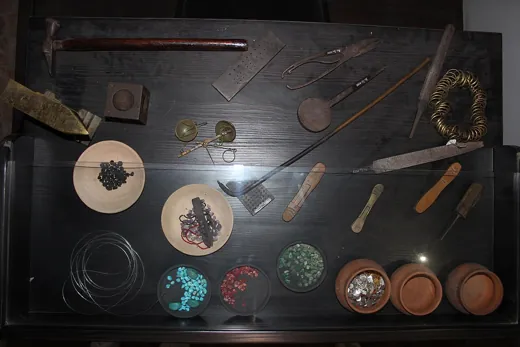
银工工具
File:Tools - Macedonian silversmith craft 02.jpg — Orce Wiki
原始文件说明页 · CC BY-SA 4.0Converted the Commons source rendition to WebP, downscaled without cropping; thumbnail downscaled separately. Derivatives retain source license.
本地文件：/imgs/content/silver.webp
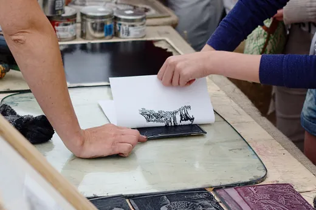
版画制作
File:Printing Using a Linocut Design.jpg — Zephyris
原始文件说明页 · CC BY-SA 3.0Converted the Commons source rendition to WebP, downscaled without cropping; thumbnail downscaled separately. Derivatives retain source license.
本地文件：/imgs/content/print.webp
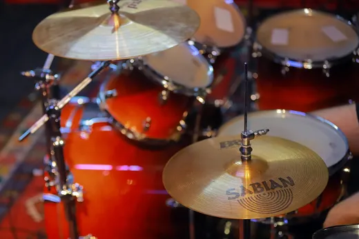
架子鼓
File:A drum kit made by Mapex Drums - Cacon Photos- Copyleft - Creative Commons 11.jpg — Mostafameraji
原始文件说明页 · CC BY 4.0Converted the Commons source rendition to WebP, downscaled without cropping; thumbnail downscaled separately. Derivatives retain source license.
本地文件：/imgs/content/drums.webp
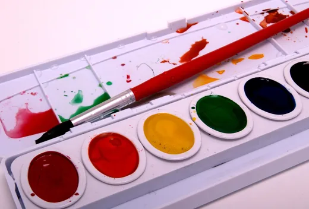
水彩绘画
File:Set of watercolor paints - Ariel Waldman.jpg — Ariel Waldman from Muncie
原始文件说明页 · CC BY-SA 2.0Converted the Commons source rendition to WebP, downscaled without cropping; thumbnail downscaled separately. Derivatives retain source license.
本地文件：/imgs/content/paint.webp
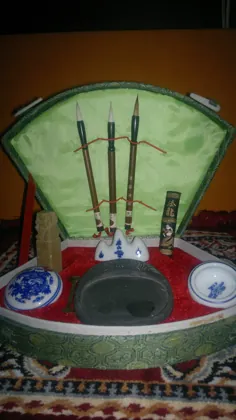
书法笔墨
File:Four treasures of the study (chinese calligraphy set to the uninitiated), Gurgaon, near Delhi.jpg — Tarunpant
原始文件说明页 · CC BY-SA 3.0Converted the Commons source rendition to WebP, downscaled without cropping; thumbnail downscaled separately. Derivatives retain source license.
本地文件：/imgs/content/calligraphy.webp
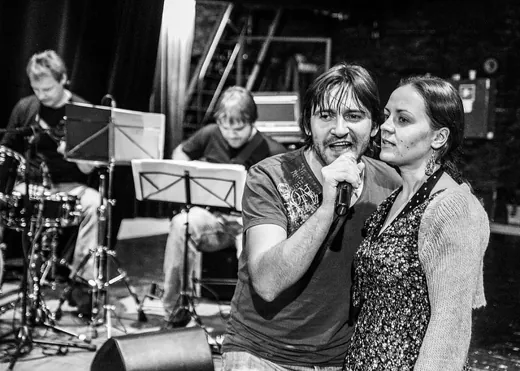
舞台排练
File:A rehearsal in Rakvere Theatre's main stage, 2014..jpg — Rakvereteater
原始文件说明页 · CC BY-SA 3.0Converted the Commons source rendition to WebP, downscaled without cropping; thumbnail downscaled separately. Derivatives retain source license.
本地文件：/imgs/content/theatre.webp
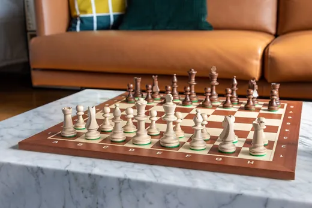
国际象棋
File:Chess board with pieces.jpg — Aaaatu
原始文件说明页 · CC BY-SA 4.0Converted the Commons source rendition to WebP, downscaled without cropping; thumbnail downscaled separately. Derivatives retain source license.
本地文件：/imgs/content/chess.webp
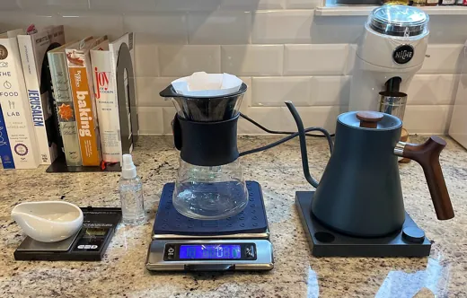
手冲咖啡
File:Coffee Pour Over Setup.jpg — Cerebral726
原始文件说明页 · CC BY-SA 4.0Converted the Commons source rendition to WebP, downscaled without cropping; thumbnail downscaled separately. Derivatives retain source license.
本地文件：/imgs/content/coffee.webp
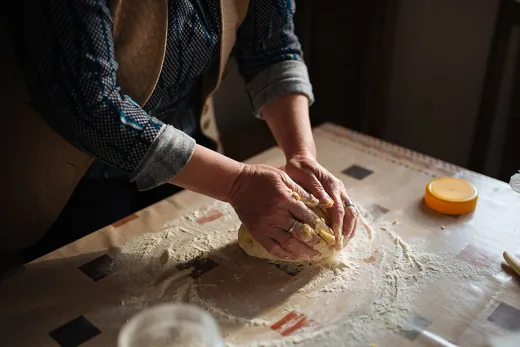
面包制作
File:Baker woman's hands kneading bread dough.jpg — Shixart1985
原始文件说明页 · CC BY 2.0Converted the Commons source rendition to WebP, downscaled without cropping; thumbnail downscaled separately. Derivatives retain source license.
本地文件：/imgs/content/bake.webp
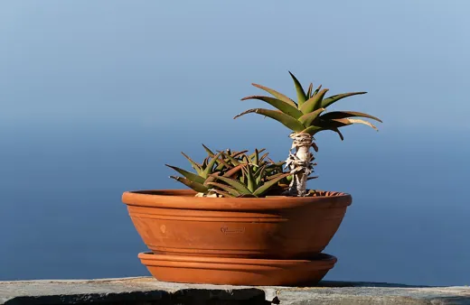
多肉园艺
File:Potted succulent plant with the ocean in the background, Tinos, Greece julesvernex2.jpg — Jules Verne Times Two
原始文件说明页 · CC BY-SA 4.0Converted the Commons source rendition to WebP, downscaled without cropping; thumbnail downscaled separately. Derivatives retain source license.
本地文件：/imgs/content/garden.webp
城市漫步
File:Shanghai - Xinyongan Road - 0001.jpg — Stefan Fussan
原始文件说明页 · CC BY-SA 3.0Converted the Commons source rendition to WebP, downscaled without cropping; thumbnail downscaled separately. Derivatives retain source license.
本地文件：/imgs/content/walk.webp
阅读空间
File:Graz University-Library reading-room.jpg — Dr. Marcus Gossler
原始文件说明页 · CC BY-SA 3.0Converted the Commons source rendition to WebP, downscaled without cropping; thumbnail downscaled separately. Derivatives retain source license.
本地文件：/imgs/content/reading.webp
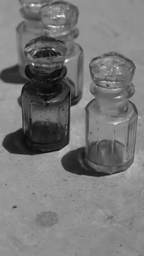
香气器具
File:Perfume bottles (ittr).jpg — Arushi Dayal
原始文件说明页 · CC BY-SA 4.0Converted the Commons source rendition to WebP, downscaled without cropping; thumbnail downscaled separately. Derivatives retain source license.
本地文件：/imgs/content/scent.webp
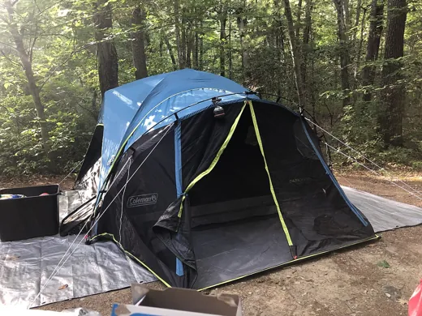
露营装备
File:Camping tent on tarp.jpg — Eden Aviv
原始文件说明页 · CC0Converted the Commons source rendition to WebP, downscaled without cropping; thumbnail downscaled separately. Derivatives retain source license.
本地文件：/imgs/content/camp.webp
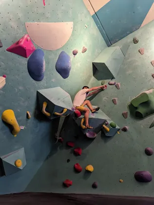
抱石岩点
File:Man climbing in bouldering gym.jpg — John Kane
原始文件说明页 · CC0Converted the Commons source rendition to WebP, downscaled without cropping; thumbnail downscaled separately. Derivatives retain source license.
本地文件：/imgs/content/climb2.webp
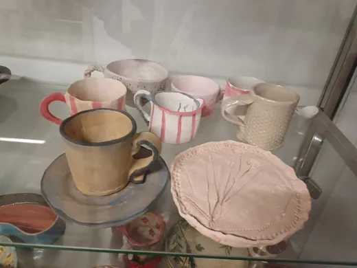
陶器作品
File:Ručno izrađene keramiče šolje i tanjiri.jpg — Nikolina Šepić
原始文件说明页 · CC BY-SA 4.0Converted the Commons source rendition to WebP, downscaled without cropping; thumbnail downscaled separately. Derivatives retain source license.
本地文件：/imgs/content/pottery2.webp
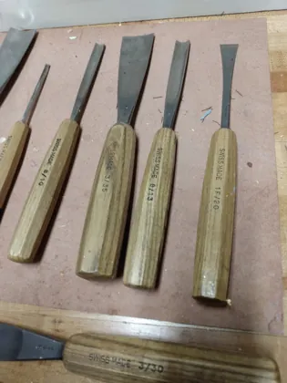
木雕工作
File:Topmast Studio (WORKSHOP) Swiss Tools at the workbench Pfeil Wood Carving Tools Gouges, Chisels, Carving Sets (pic.g31).jpg — David Adam Kess
原始文件说明页 · CC BY-SA 4.0Converted the Commons source rendition to WebP, downscaled without cropping; thumbnail downscaled separately. Derivatives retain source license.
本地文件：/imgs/content/wood2.webp
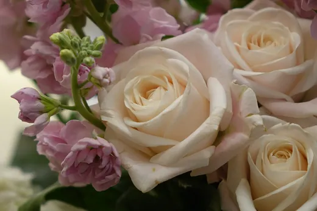
花束
File:Floristry (20150228117).jpg — 최광모
原始文件说明页 · CC BY-SA 4.0Converted the Commons source rendition to WebP, downscaled without cropping; thumbnail downscaled separately. Derivatives retain source license.
本地文件：/imgs/content/flower2.webp
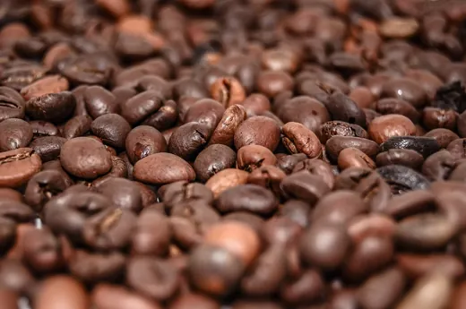
咖啡豆
File:Coffee-beans-399479.jpg — Michal Jarmoluk ( jarmoluk )
原始文件说明页 · CC0Converted the Commons source rendition to WebP, downscaled without cropping; thumbnail downscaled separately. Derivatives retain source license.
本地文件：/imgs/content/coffee2.webp
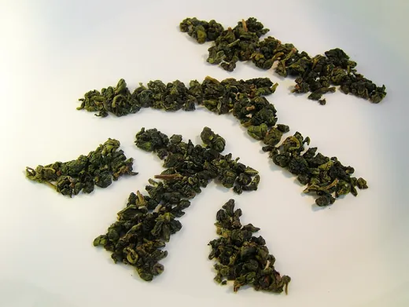
茶叶
File:Oolong tea leaves - character for tea in Chinese.jpg — Toby Oxborrow from Kowloon, Hong Kong
原始文件说明页 · CC BY-SA 2.0Converted the Commons source rendition to WebP, downscaled without cropping; thumbnail downscaled separately. Derivatives retain source license.
本地文件：/imgs/content/tea2.webp
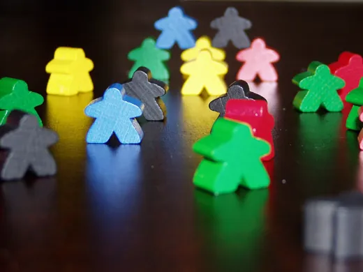
桌游棋子
File:Carcassonne Miples.jpg — Júlio Reis ( User:Tintazul )
原始文件说明页 · CC BY-SA 2.5Converted the Commons source rendition to WebP, downscaled without cropping; thumbnail downscaled separately. Derivatives retain source license.
本地文件：/imgs/content/board2.webp
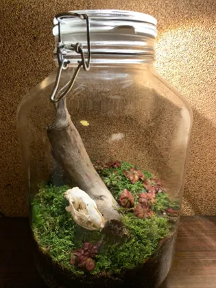
微景观植物
File:Terrarium by plantlover93.jpg — Plantlover93
原始文件说明页 · CC BY-SA 4.0Converted the Commons source rendition to WebP, downscaled without cropping; thumbnail downscaled separately. Derivatives retain source license.
本地文件：/imgs/content/garden2.webp